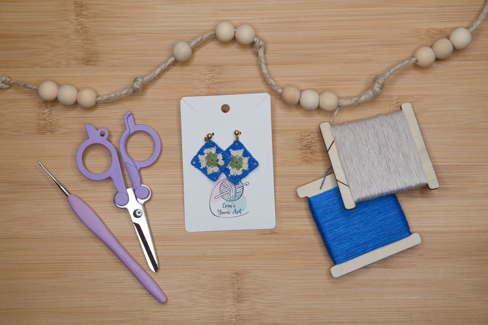

Hand-crocheted
Micro-earings made with love
Why we do it!
I love creating micro crochet jewelry because it's a fun challenge working on a tiny scale resulting in a fun miniature item.
One of the best things about micro crochet is that the finished pieces are incredibly lightweight, making your ears hardly notice them at all. Creating tiny crochet pieces gives me endless opportunities to experiment with color combinations and thread types while crafting accessories that are both fun to make and wear.
And let's be honest, miniature things are always cuter than full sized.